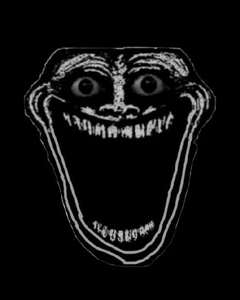

My favorite Game
My favorite game is a game called "Elden Ring" - made by a game studio called FromSoftware directed by the mastermind Hidetaka Miyazaki.
Elden Ring was the game that got me interested in the rest of the souls games. A gateway drug if you will. His games take a grim-dark world fantasy approach. In most of his games, you arrive in a land already ruined, ruined kingdoms, locked in a stalemate in war. This is the basic premise of Elden Ring.You are a nameless character, dubbed as a 'tarnished' which is a name given to those who have lost the guidance of grace.
You arrive in a land called The Lands Between, which is locked in a stalmate between demigods fighting for the power of godhood.You must fight your way to the end, by killing all of the demigods and collecting their power to become powerful enough to slay a god, the god that has power over the lands between.This is called the Golden Order. At the end, you can choose to mend the Golden Order, or choose to usher in a new age, under a new gods power.